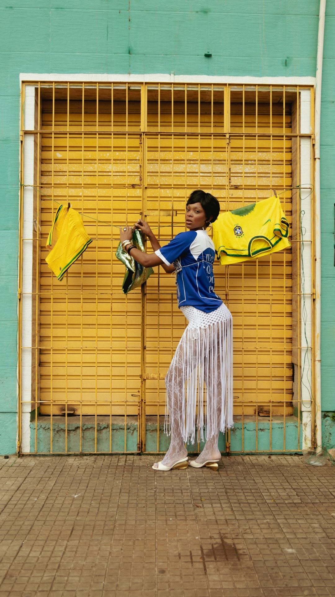
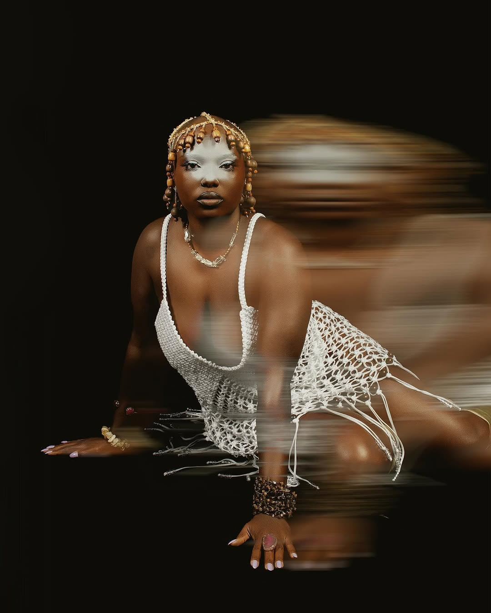
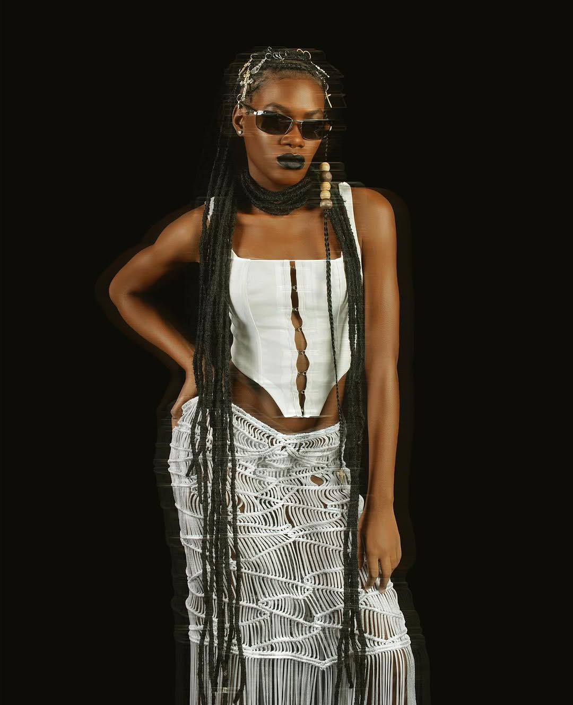
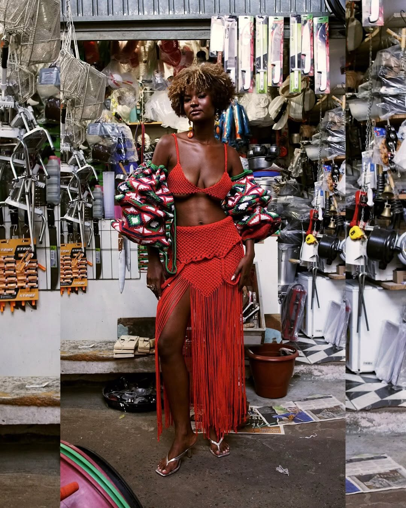

coleção atual
Transe
“A nossa independência é estética.”
O Brasil em Transe: praia, guarda-sol, cor saturada. Vestidos tecidos em macramê com aplicações de miçangas, disponíveis no acervo e produzidos sob demanda.


coleção atual
“A nossa independência é estética.”
O Brasil em Transe: praia, guarda-sol, cor saturada. Vestidos tecidos em macramê com aplicações de miçangas, disponíveis no acervo e produzidos sob demanda.


editorial
“Teço o meu terço, bordando no corpo.”
Nasceu de uma escrita depois da leitura de “Meu Rosário”, de Conceição Evaristo. O macramê como reza materializada: contas, calo nas mãos, nó, fé e coragem.



editorial
“Amarrando meus nós, desemaranhando cada fio.”
Um retorno. Reorganizando e tecendo enquanto reza, no meio da feira, entre panelas, cestos e gente.
ver o conjunto →